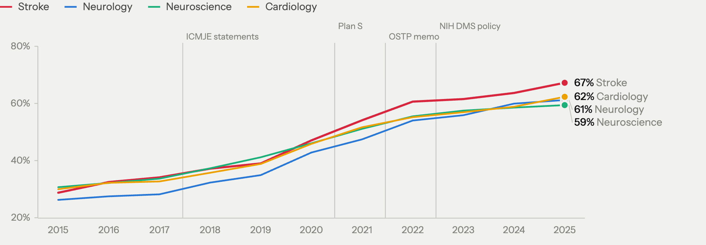

World Stroke Congress 2026 · Seoul
08 Finding 1
29% → 67%
published open,stroke, 2015 to 2025
75%
free to read byany route, 2025

Published open = gold, diamond or hybrid in OpenAlex · free to read = any status other than closed